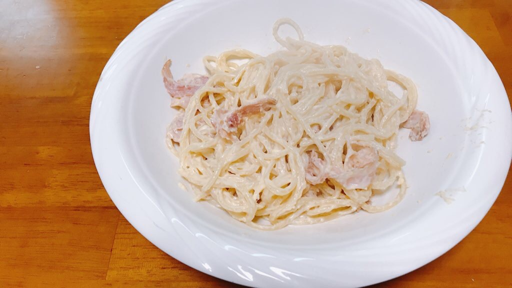
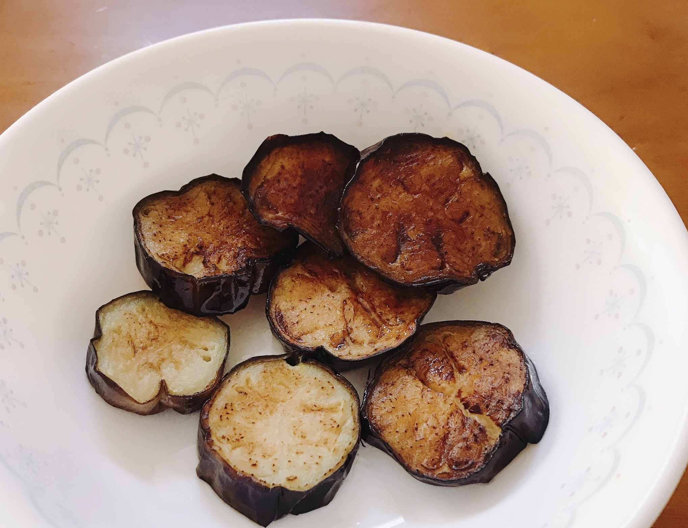
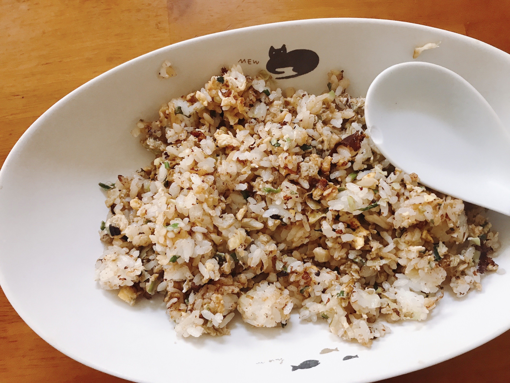
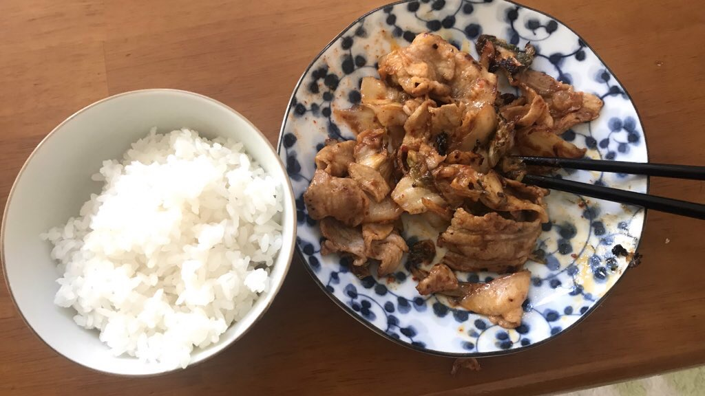

Cook diary
カルボナーラ

作り方
- フライパンでベーコンを炒めます
- そこに牛乳と粉チーズを投入しいい感じにします
- 茹でたパスタを入れて納得がいくまで煮詰めます
- 美味しいカルボナーラの出来上がりです。
ビールとの相性 ☆
なすの油揚げ
作り方
- フライパンに油をしこたま入れます
- そこに薄くスライスしたナスを投入します
- これでもかというくらいナスに油を染み込ませます
- 美味しいなすの油揚げの出来上がりです。
ビールとの相性 ☆☆☆☆

チャーハン

作り方
- フライパンでウインナーその他もろもろを炒めます
- そこに溶き卵を投入し軽く火を通します
- ご飯と塩胡椒などの調味料を加えて全体と混ぜ合わせます
- 美味しいチャーハンの出来上がりです。
ビールとの相性 ☆
豚キムチ
作り方
- フライパンに油を引き先にキムチを炒めます
- 軽く火が通ってきたところで豚肉を投入しキムチと馴染ませます
- いい具合になるまで炒めます
- 美味しい豚キムチの出来上がりです。
ビールとの相性 ☆☆☆☆☆

各料理特徴表
| 手軽さ | 美味しさ | 安さ |
| カルボナーラ | ☆ | ☆☆☆ | ☆ |
| なすの油揚げ | ☆☆☆ | ☆ | ☆☆☆ |
| チャーハン | ☆☆ | ☆☆ | ☆☆ |
| 豚キムチ | ☆☆ | ☆☆☆ | ☆☆ |